Week 08 · CNC
Fidget Spinner, Lego Ice Tray, and Chocolate Mold
CNC design, silicone casting, and vacuum forming, with my friend Nick.


Overview
This project was a group with my friend Nick. The idea was to use the ShopBot CNC machine to cut a custom fidget spinner out of wood, then make a silicone mold of the spinner and cast melted chocolate in it to get an edible version. We also vacuum formed 8 Lego bricks lined up in a row to make a Lego shaped ice cube tray, because once we got going with mold making it seemed like a waste not to try a second one.
Step 1: CAD design
We designed the spinner in Fusion 360, with three arms coming out from a central hub and a hole in the middle sized for a bearing. The arms have to be balanced (same shape, same distance from the center, same mass) or else the spin is wobbly and the spin time drops a lot. Each spinner also needed 2 small caps to cover the bearing on either side, so we modeled those separately and 3D printed them after measuring the actual bearings we were using (S608ZZ).
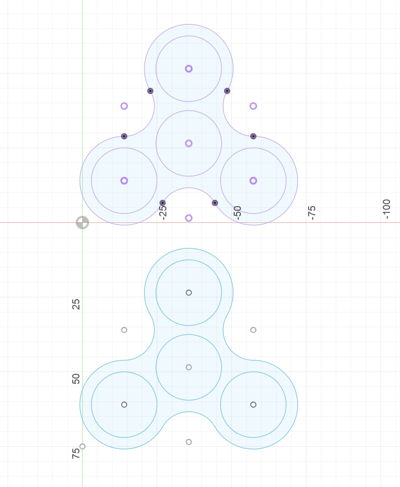
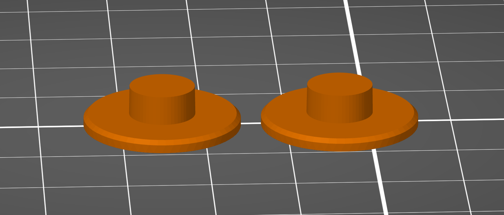
Step 2: CNC cutting on the ShopBot
We exported the design as a DXF and loaded it into the ShopBot to cut out of 6mm plywood. The working area got measured out on the wood and Nick held it down with the nail gun at the corners so it wouldn't shift mid cut. One of the most useful tips we got was to add tabs to the cut, which are small uncut sections that hold the part to the surrounding wood. Without tabs, the cut piece can vibrate loose right before the cut finishes and it'll move out of position, ruining the cut. With tabs, the part stays attached until you snap it free with a cutter after the job is done.
Step 3: Sanding and bearing fit
After the cut we sanded down all the edges to smooth out the rough wood. Then we used a rubber mallet to gently tap the bearing into the center hole, the fit was tight enough that we didn't need any glue. With the bearings in, the average spin time was 15-20 seconds, which was fine but I wanted longer. I had a fidget spinner obsession when I was younger so I knew the trick, a small drop of grease in the bearing brings spin time up to 30-45 seconds. Worked perfectly here too.
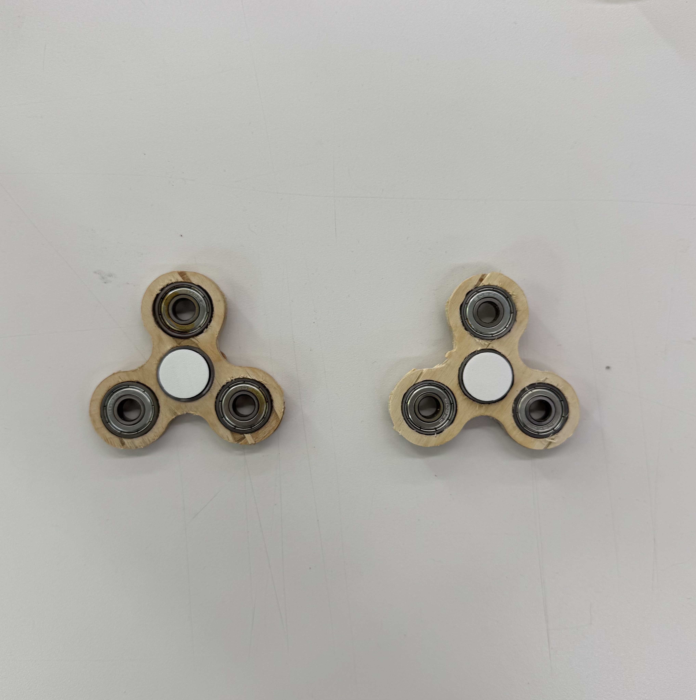

Step 4: Laser cutting a casting container
To make the silicone mold we needed a small box that the silicone could pour into around the spinner. The lab only had large mixing cups, which would have wasted a lot of the food safe silicone, so we designed our own small box in Fusion 360 with finger joints, exported it as a DXF, and laser cut it from thin wood. Folded up, finger joints interlocked, hot glue around the seams to keep the silicone from leaking, ready to use.
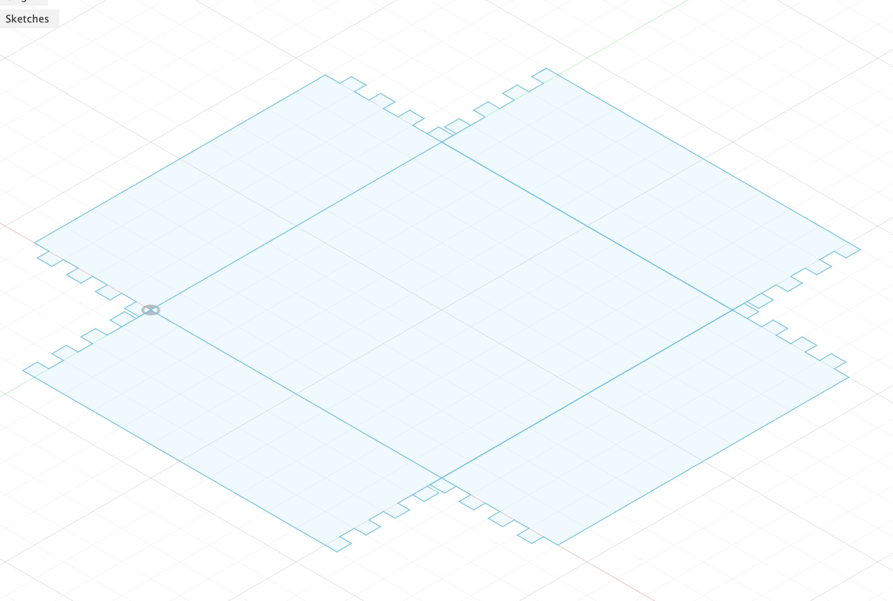
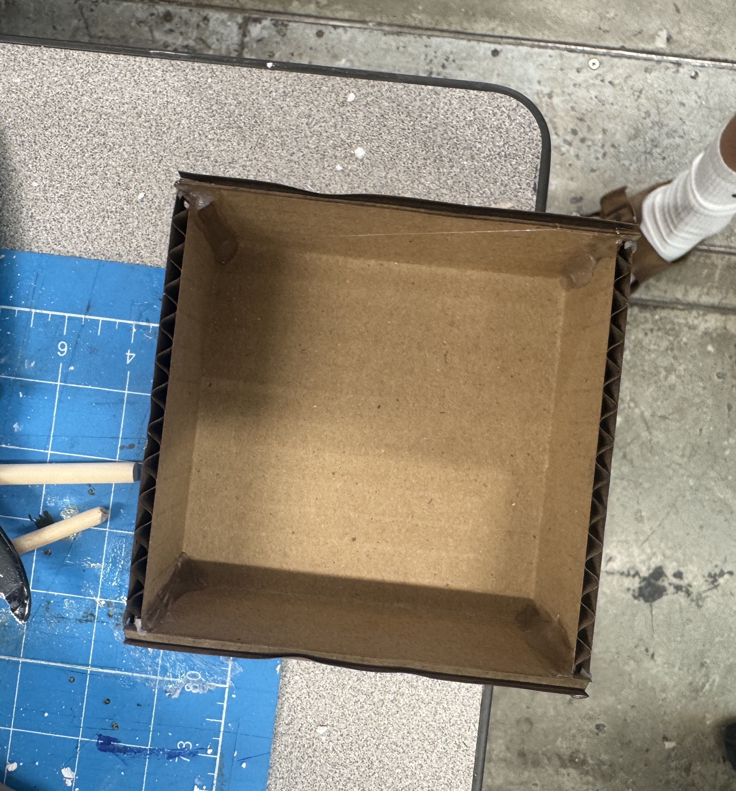
Step 5: Preventing the spinner from sinking
When you pour silicone into a box and drop the spinner in, the spinner sinks to the bottom, which is bad because you want silicone on both the top and bottom of the part for a proper mold. We fixed this by suspending the spinner from above, a popsicle stick laid across the top of the box, the spinner hot glued to the bottom of the stick, with the spinner hanging down into the box at the right depth. A ruler kept everything level. Then we poured the silicone in.
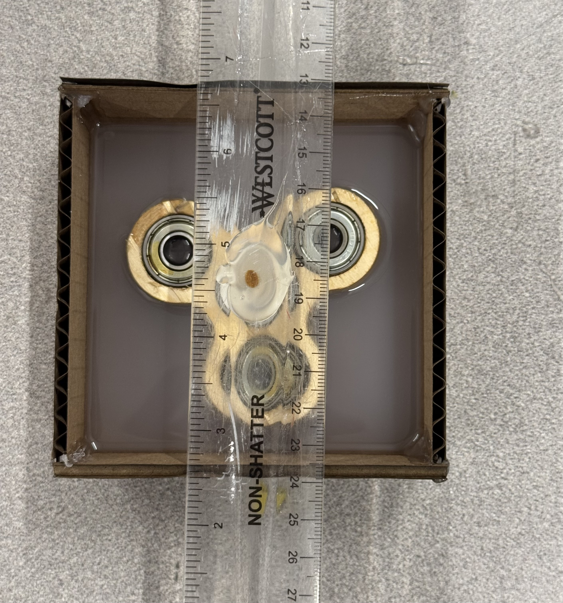
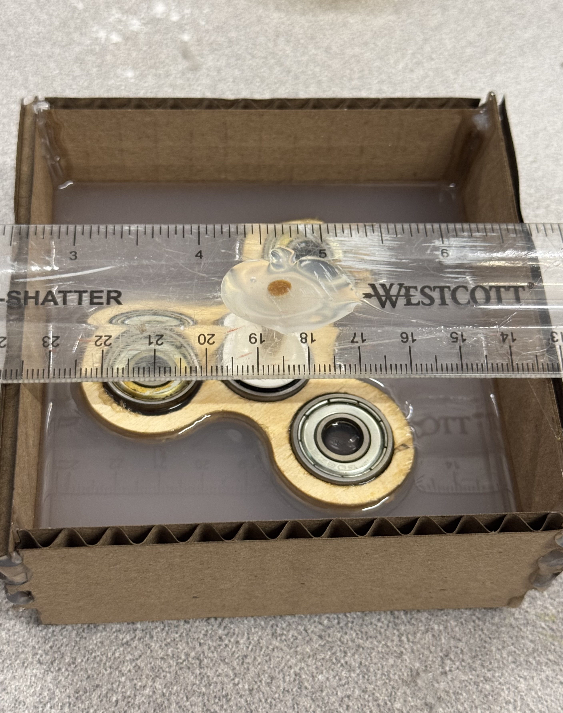
Step 6: Mold making and chocolate casting
We let the silicone cure overnight, peeled the box off and pulled the spinner out, and we had a clean negative mold of the spinner shape. Melted some baking chocolate in the microwave, poured it into the mold, and put the whole thing in the fridge to set up.
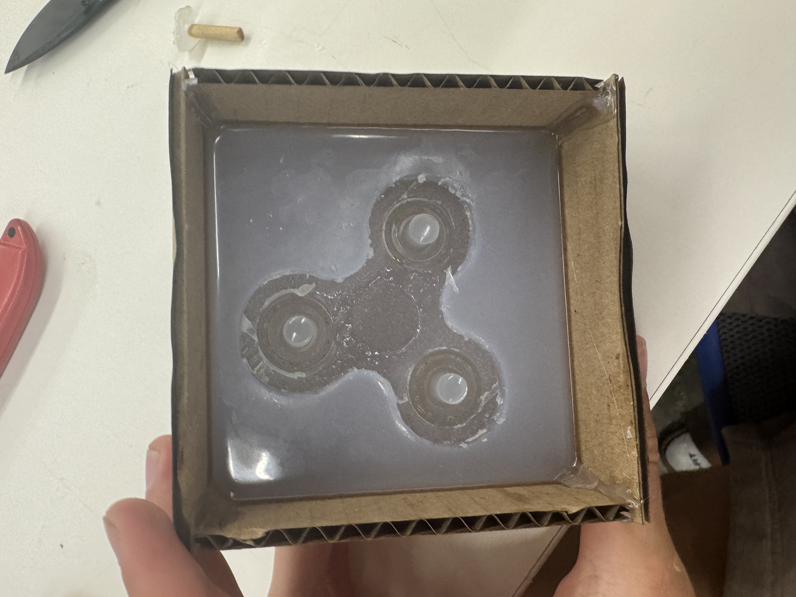

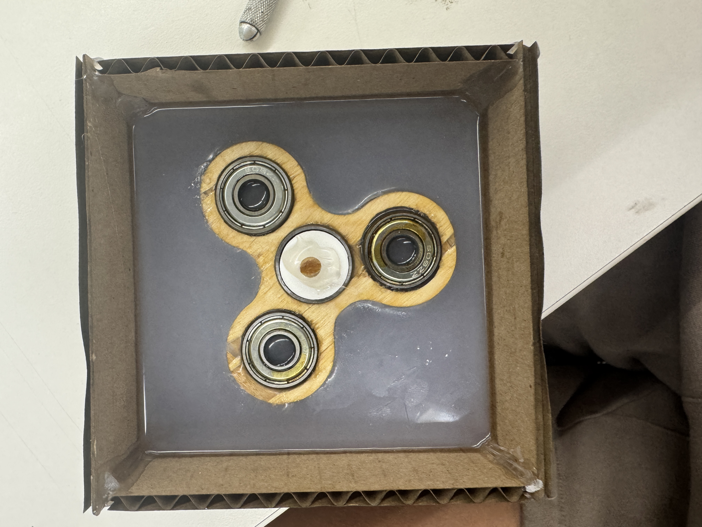
Chocolate results
About 30 minutes in the fridge later, we popped the chocolate out of the mold and ended up with an edible spinner that actually looked like the wooden one.
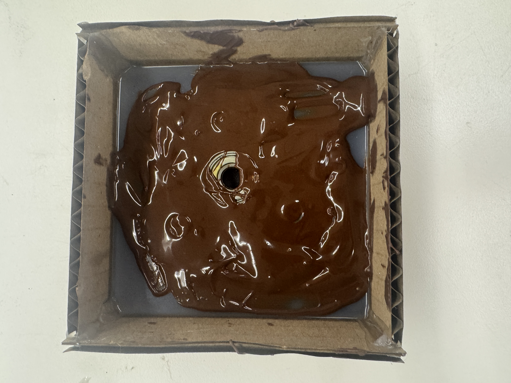
Step 7: Lego ice tray with the vacuum former
The chocolate spinner came out so well that we still had time for another mold project, and one of us had brought a bag of Legos. The vacuum former works by heating a plastic sheet until it droops, then sucking it down hard over an object placed on the bed, so the plastic takes the shape of the object. We lined up 8 Lego bricks in a row on the bed, heated the sheet, and when it started drooping we pulled it down and hit the vacuum. After trimming the plastic around the edges we had a Lego shaped tray.
One annoyance, the vacuum former was beeping once a second the whole time we were using it, which we eventually fixed by mashing the side button on and off until the alarm cleared. I love Legos, so being able to drop Lego shaped ice cubes into iced coffee in the mornings is a good outcome.
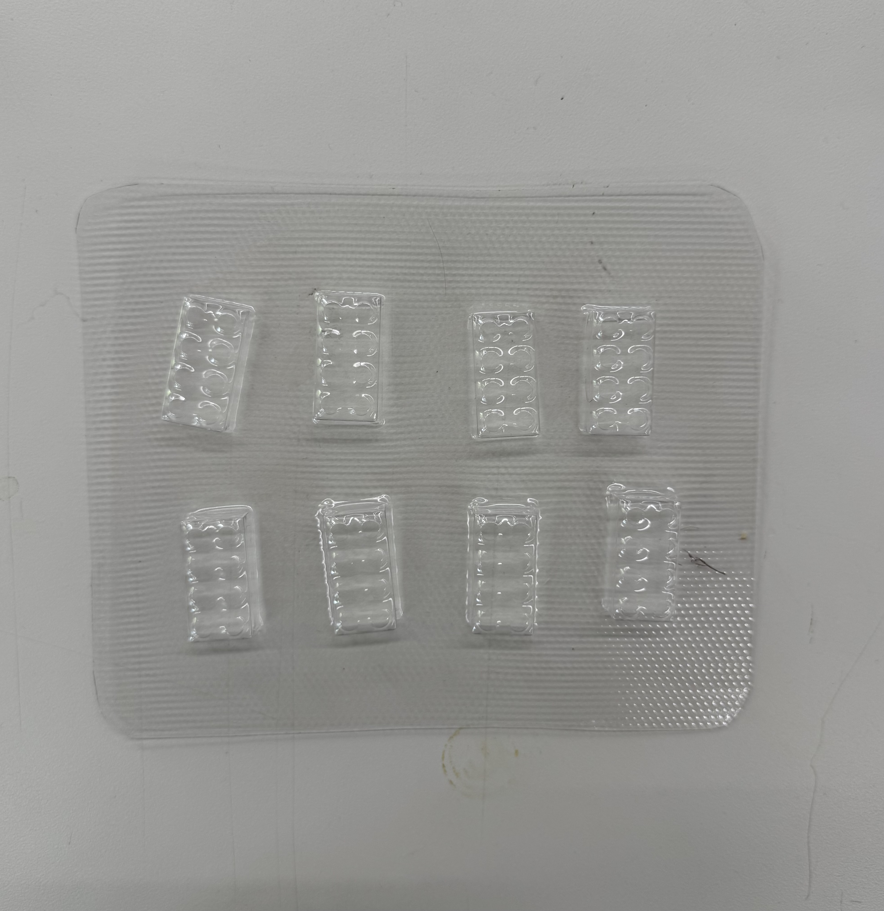
Final results
Three things came out of this week, the wooden spinner, the chocolate version, and the Lego ice tray.
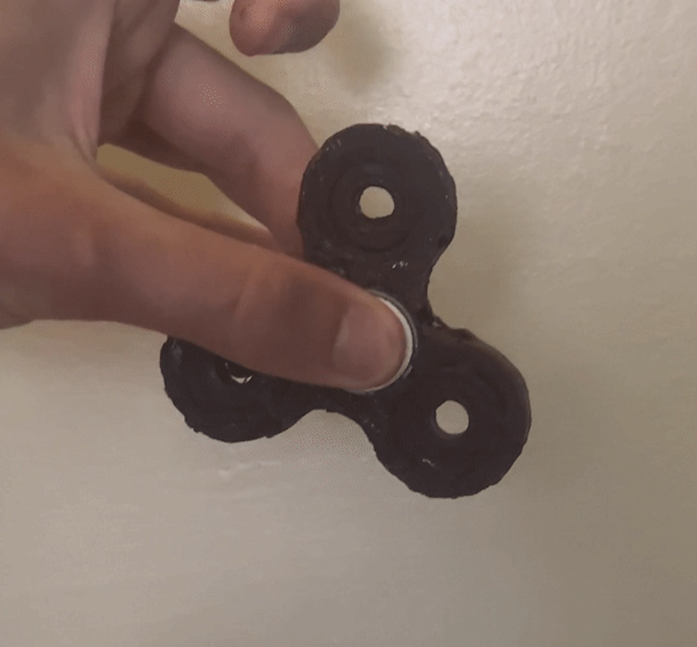
What I learned
This was the first week where I went from a CAD file to a real object and then made copies of that object in different materials. CNC for the original, silicone for the mold, chocolate for the cast, and vacuum forming for a separate plastic part. Each technique has its own gotchas (tabs on the CNC, the spinner sinking in the silicone, the heat timing on the vacuum former), but once you do them once they're all pretty repeatable. The chocolate part is what I'm most proud of because the geometry came through really clearly, you can see the bearing pocket in the middle of the cast.